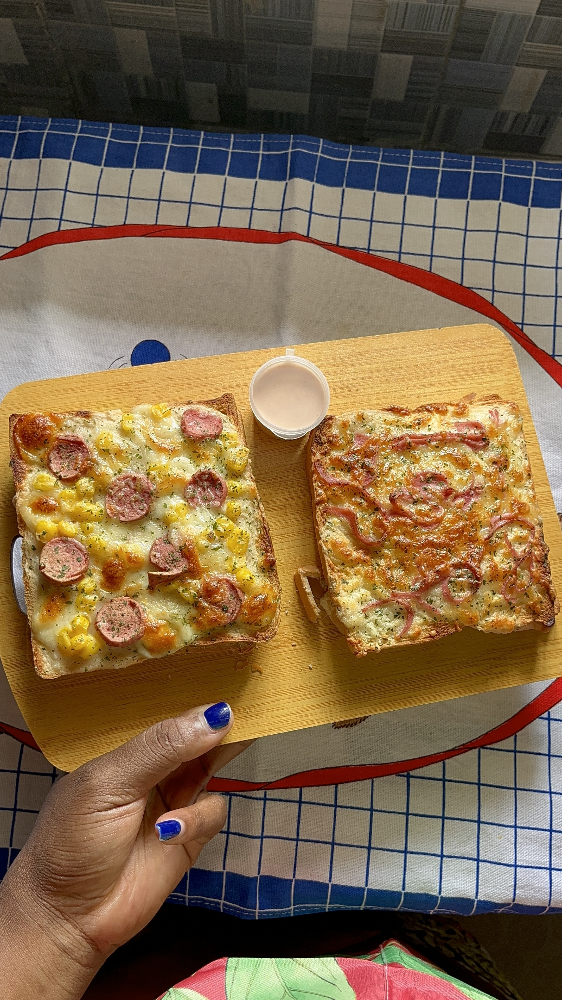

Le goût du fait maison · Cococodji
Une envie de
croque bien chaud ?
Des croques généreux, des formules gourmandes et une commande simple par WhatsApp.
Précommande conseillée 24 h à l’avance

Fait maison avec gourmandise
À chacun son croq’
Le bonheur en formule
Le menu complet, sans hésiter
En cuisine